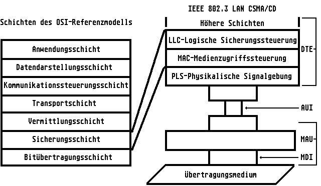

Previous
Next
TOC
IEEE 802.3 (Ethernet)
Einführung
Ethernet ist quasi der Urvater aller Netzwerke. Dieses Bussystem
wurde gemeinsam von den Firmel XEROX, Intel und DEC entwickelt und
wurde als IEEE 802.3 genormt. Ethernet oder IEEE 802.3 mit dem Zu-
griffsprotokoll CSMNCD ist heute das am weitesten verbreitete lokale
Netzwerk. Ethernet läßt sich mit verschiedenen physikalischen Medien
implementieren: Koaxialkabel, Lichtwellenleiter und verdrillte
Litzenleiter, mit oder ohne Abschirmung. Ethernet lOBaseS und lOBase2
sind Netzwerke mit Bus- und lOBaseT mit Stern-Topologle. Ethernet
besitzt logisch eine Busstruktur.
CSMNCD = Carrier Sense Multiple Access/Collision Detection
Alle ,,Ethernet-Netze'' benutzen dieses Zugriffsverfahren. Bei dieser
Zugriffsmethode wird das Netzwerk vor dem Starten eines Übertragungs-
vorganges von der sendewilligen DTE <Station, Rechner> überprüft, ob
bereits eine Übertragung stattfindet (das heißt ,,Carrier Sense'').
Ist dies der Fall, würde die sendewillige DTE eine Kollision erzeugen.
Sie stellt ihre Übertragung zunächst zurück, bis die andere Übertra-
gung beendet ist. Beginnen zwei DTEs gleichzeitig mit einer Übertra-
gung, erzeugen sie eine Kollision von Datenpaketen, wobei beide Sta-
tionen die Kollision erkennen (Collision Detection). Die DTE, die
diese Kollision zuerst erkennt, sendet ein Warnsignal aus. Beide DTEs
brechen ihre Übertragungen ab. Ein Zufallsgenerator erzeugt nun für
jede DTE eine Wartezeit, nach der diese wieder übertragen dürfen.
Die Kollision ist damit aufgehoben. ,,MA''-Multiple Access, Mehrfach-
zugriff, bedeutet, daß mehrere Stationen (DTEs) an den Bus angeschlos-
sen werden können.
Standard IEEE 802.3
Dieser Standard bezieht sich auf die Bitübertragungs- und die Siche-
rungsschicht des lSO-Referenzmodells. IEEE 802.3 spezifiziert ein LAN,
das CSMNCD als Zugriffsverfahren auf die verschiedenen Arten von phy-
sikalischen Medien definiert.

weiterblättern
Kapitel IEEE 802.3 (Ethernet), Seite 1